대표 사례
서울 관내 도시농업 텃밭
- 도시농업 텃밭에 설치·운영
- 국내 첫 도시농업 텃밭 적용
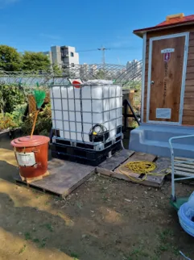
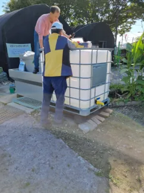
유기농 텃밭을 위한 퇴비차 제조 장치
센터에서 받은 미생물이든 직접 배양한 미생물이든, 물 1톤과 퇴비를 넣고 하루. 터보믹스가 산소를 불어 넣어 살아 있는 퇴비차를 만듭니다.
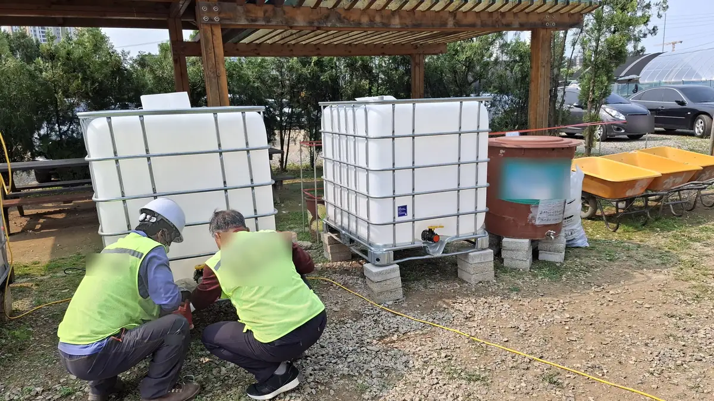
01퇴비차란?
퇴비차는 비료가 아니라, 흙을 살리는 물입니다
식물은 뿌리로 당을 내보내고, 미생물은 그 대가로 양분을 풀어 줍니다.
수백만 년 이어진 이 거래가 끊긴 땅에서는 비료를 더 넣어도 작물이 약해집니다.
퇴비차는 퇴비 속 유익한 미생물을 물에서 산소와 함께 깨우고 늘린 액체입니다.
땅에 뿌리면 미생물이 다시 일을 시작합니다.
1미생물 + 퇴비 + 물
2산소 공급 하루
3텃밭에 살포
왜 산소가 중요한가 산소가 부족하면 유익균 대신 냄새 나는 균이 늘어납니다. 퇴비차의 품질은 산소가 결정합니다.
02도입 사례


농가에 배포하는 미생물을 퇴비차 장치로 활성화
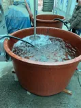
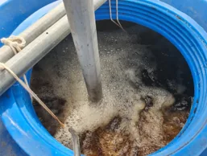
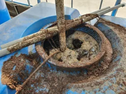

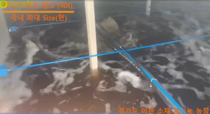
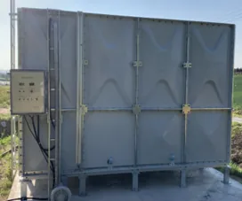
+30%
생산량 30% 증가
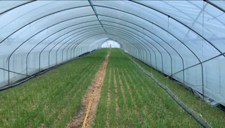
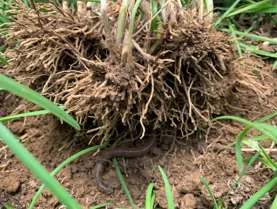

25일20일
출하 기간 25일 → 20일
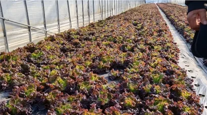
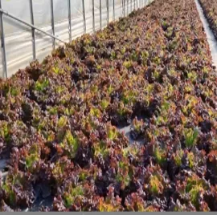
초기 발아율 개선
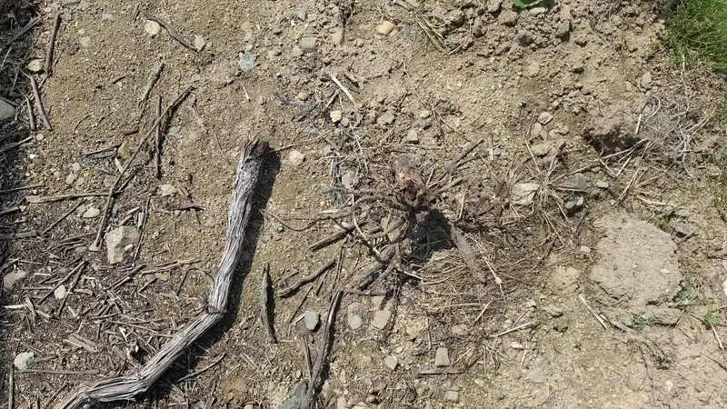
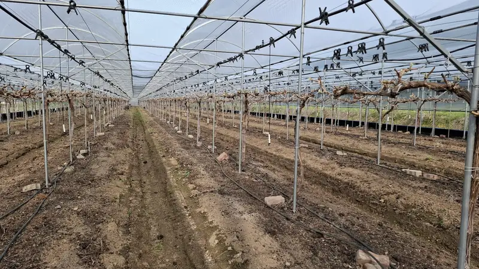
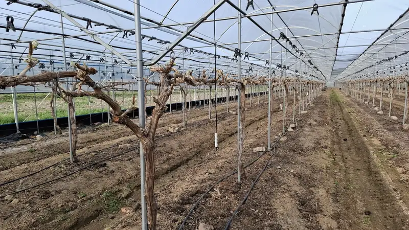
2026 확대
성장기~비대기 적용, 품질 향상, 2026 확대 적용
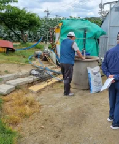
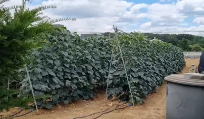
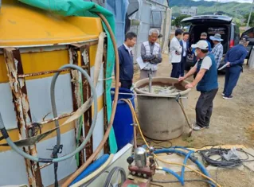
토양 미생물 활성화로 생산량 증가
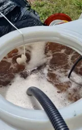

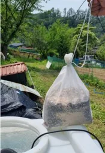
유기농 비료 활용
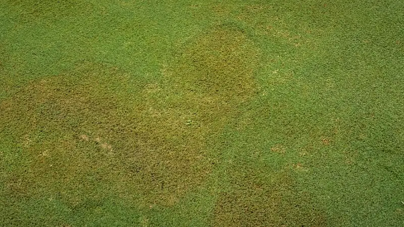
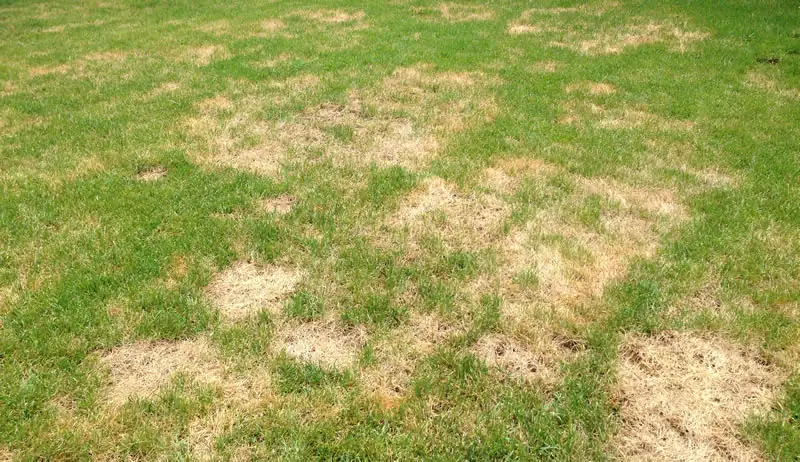
잔디 관리 개선
※ 결과는 각 농가의 현장 관찰·기록 기준이며 토양·기후에 따라 다를 수 있습니다.
03터보믹스 Turbo Mixer
현재 공급 중인 1세대를 현장 의견으로 다시 설계했습니다
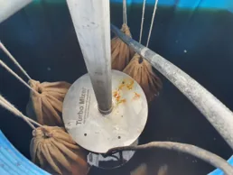
(세부 사양은 출시 시 공개)
물 1톤+미생물제 1kg+퇴비 30kg 미만→약 하루
현장 규모에 따라 견적으로 안내합니다
04마이크로 부스터 · 미생물 촉진제
퇴비차 제조와 음식물 퇴비화에 쓰는 미생물 촉진제입니다. 1kg 단위로 공급합니다.
물 1톤에 퇴비와 마이크로 부스터 1kg을 넣고, 터보믹스로 하루 산소를 공급합니다.
서울 관내 음식물 처리 현장에 납품하고 있습니다. 음식물과 함께 섞어 퇴비화를 돕습니다.
05지자체·기관 도입 안내
텃밭 위치, 면적, 전기(220V) 여부
설치 위치·급수·전기 점검
현장 규모에 맞춰 메일로 견적을 보내 드립니다
설치 후 첫 제조를 함께 진행, 관리 담당자 교육
소모품(부스터) 공급, 점검
제목: [터보믹스 견적 문의] 기관/농장명